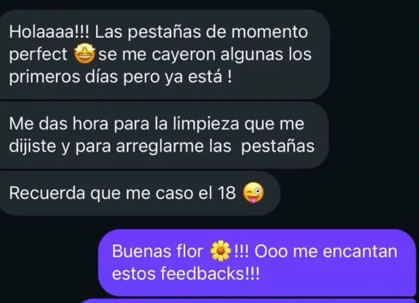

Especialistas en mirada · Granollers
Lifting coreano y tinte de pestañas en Granollers
Elevamos y definimos tu pestaña natural con lifting coreano, tinte vegano y una valoración previa de longitud, dirección y resistencia.


Seguimiento real
“Las pestañas, de momento, perfectas. Me encantan estos resultados.”Clienta de Nohuska · tratamiento de pestañas
No todas las pestañas necesitan la misma curvatura.
Antes del servicio revisamos la dirección, longitud, resistencia y estado de la pestaña natural. Así adaptamos el lifting coreano y decidimos si el tinte puede aportar definición sin sobrecargar el resultado.
Si también quieres ordenar y definir las cejas, Nohuska Korean Gaze™ reúne Natural Brow™, lifting coreano y tinte vegano en un único protocolo de mirada.
Tratamientos de pestañas activos
Servicio de extensiones temporalmente pausado.
Actualmente no estamos aceptando nuevas reservas de extensiones ni rellenos. Si buscabas una mirada más abierta y definida, podemos valorar lifting coreano con tinte trabajando únicamente tu pestaña natural.
Pestañas cerca de ti en Granollers.
El servicio se realiza con cita previa en Avinguda Sant Esteve, 40, 08402 Granollers. Horario habitual: lunes a sábado, de 10:00 a 20:00.
También atendemos a clientas de otras localidades del Vallès Oriental.
¿Lifting o Korean Gaze?
Elige lifting si quieres trabajar solo las pestañas. Si también deseas diseñar, laminar y teñir las cejas, consulta Korean Gaze™.
Consultar mi casoPreguntas frecuentes sobre pestañas
¿Dónde hacerme un lifting de pestañas en Granollers?
En Nohuska Beauty Lab, Avinguda Sant Esteve, 40, 08402 Granollers, con cita previa.
¿Se puede añadir tinte al lifting?
Sí, cuando el estado de la pestaña lo permite. El tinte vegano aporta definición, especialmente cuando las puntas son claras.
¿Qué incluye Korean Gaze™?
Natural Brow™, lifting coreano y tinte vegano para diseñar cejas y pestañas como un conjunto.
¿Realizáis extensiones?
El servicio de extensiones y rellenos está temporalmente pausado.
¿La valoración es gratuita?
Sí. Escríbenos por WhatsApp para explicar el efecto que buscas y consultar disponibilidad.